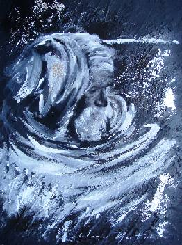
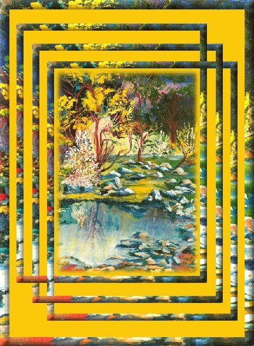
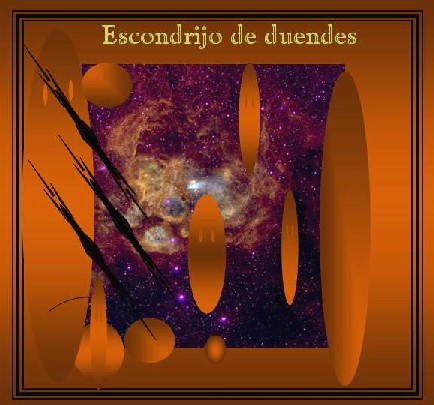
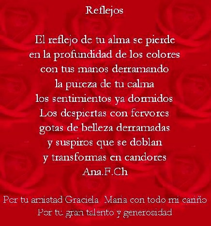
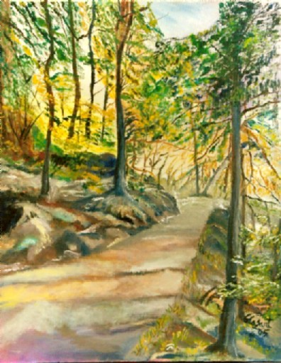
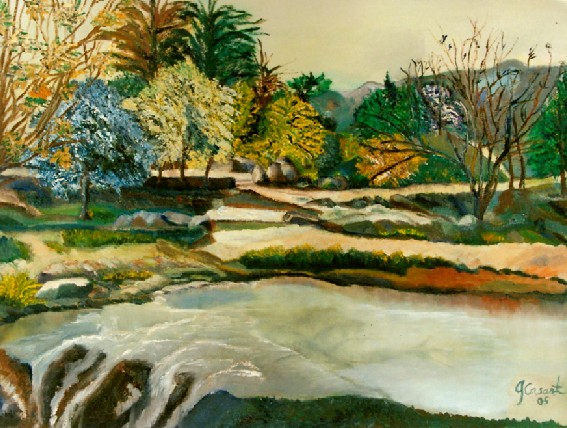
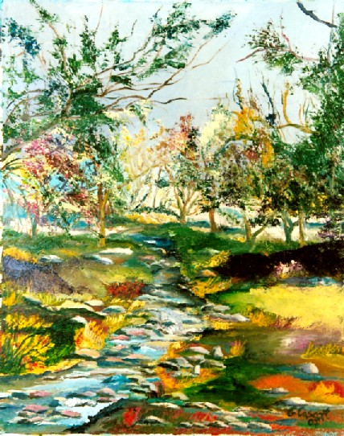
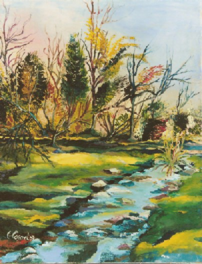

Escondrijo de duendes
Mi
duende encantado
¡Oh! ser ideal que he buscado; a lo largo de la vida... ¡Mágico duende encantado causante de mis heridas!
Te has escondido engañoso; cuando te quise alcanzar... ¡A tu escondite, celoso: siempre supiste llegar!
Y hoy al fin de mi camino; perdida la juventud... ¡Sé que ha sido mi destino: llorar por tu ingratitud!
Autor : Marga Mangione Publicado en el Cuadernillo del Taller
Literario de la Secretaría de Cultura y |
 Obra de Dolores Martina Meral |
 "Escondrijo de
duendes" Óleo sobre tela de Graciela María Casartelli |
El duende de la nada
Para hombres que mientas Y más allá ¡de ella! Es hogar, y es refugio, Cuna de primavera En la página nueve Escribimos sus hojas Mi selva comprimida Como fuego de noche
|
Pinturas de Graciela María Casartelli
(Unquillo, Sierras de Córdoba, Argentina) |
Hace diez años, comencé a pintar
paisajes, por influencia de un gran amigo, que me dijo : "¡Esto es
para vos...!"
Sucedió durante dos meses, en un Taller montado en un lugar histórico
de la ciudad de Córdoba (Argentina):
"El Molino de Torres" en Villa Warcalde.
Con la mayor timidez, pues jamás hubiera
pensado que esto significara una vocación para mí, como ahora
lo siento;
junto a otras artes como la música, el canto, la comunicación
social, la literatura y la poesía.
Es que con todo lo mencionado, siempre he
pensado que "juego", pues me había acostumbrado a lo largo
de los años,
a las exigencias de las "Ciencias duras" (aunque enuncien que no lo
son), basadas en el razonamiento deductivo, la exactitud,
la repetición y el enciclopedismo... Lejos estoy ahora de todo eso.
Con el otoño en ciernes, pienso que
cada cosa tuvo el sitio que debía tener en su momento... ¡Valioso
sitio! para continuar
el camino de la vida como ésta se plantea en el mundo, con exigencias
que no esperan ni contemplan.
No ceden ningún lugar.
Orgullosa de haber sido "un caballito
en batalla", herido y golpeado demasiadas veces, es que abro este capítulo
"libre",
antes del final, que no sé cuánto tiempo podrá durar. Los
pasos y los avatares son inciertos y sólo algunos están dotados
para mantener su jactancia, demasiado tiempo.
Como expresé en uno de mis poemas:
"El instinto me empuja. Sobrevivo al desierto...Todavía..."
 Haz doble click sobre esta imagen para entrar en la Web de Ana |
 |
. . .
Actualmente,
tomo clases con el Profesor Ernesto Giannini. Mientras que en el período
2004-2007, asistí al Taller del Pintor Néstor Verón
de Villa Allende. En este tiempo, he tenido la humilde gracia de transitar en aras de un estilo propio, virando hacia el impresionismo, dentro de la pintura figurativa y el paisaje. Uno de mis cuadros (está al principio), me inspiró al nombre de este nuevo espacio en Vida Reflexion. |
 Mi pintura: Un camino en la montaña - La Cumbrecita-Córdoba, Argentina.. |
El duende
Y en un descuido de mi mala suerte, burlaré la muerte; en un instante fugaz, seré capaz de nombrarte tres veces en la niebla infinita. Descubriré que palpita tu mano aún junto a la mía, en la formal melancolía de recordar pieles y pasados, en la súbita memoria de habernos amado en la parte de los huesos donde todo se aprende en el resquicio de memoria que asemeja la noria de tallados corazones con las sinrazones que el amor y la razón extienden... Te diré calladamente...: Ven amor, recuéstate aquí, besémosnos de nuevo, donde vivimos nosotros, los antiguos dueños que perseguían los sueños del escondrijo del duende....
|
El BOSQUE ENCANTADO
Todos necesitamos Hay un lugar oculto Los duendes son seres especiales Pide un deseo Nunca permitas |
 Mi pintura "Encuentro de dioses" . . .
Necesitas de una mano amiga, Un bosque encantado!!! |
 Mi pintura "Tarde primaveral" |
En el bosque de mis sueños... En el bosque de mis sueños regreso todas las tardes deseando verte cada instante como una luz resplandeciente. Tú que a mi vida iluminas de amor y cosas buenas ¿dónde estás? ¿a dónde fuiste? mi corazón se pregunta... Será real, o ¿sólo un sueño? cuando el amor nos abrazó y en ese despertar tu y yo fuimos dueños. Y aquí te seguiré esperando todas las tarde de mi vida pensando que este sueño será realidad un día. Los árboles serán mis confidentes El sol iluminará mi sonrisa Y cada atardecer, Una lágrima correrá en mi mejilla. ::::::::::::::::: Nora Lanzieri / Argentina Todos los derechos reservados 438744® http://el-arte-de-crear-arte.blogspot.com/ |
Pintora Misteriosa
|
 Mi pintura "Tarde fresca" Gaciela María
"Más claro que el agua lo ve el poeta
o el que lleva el arte en las venas. Recuerdo que cuando empecé
a tomar clases de arte el maestro nos enseñó a mirar cosas
y definir que veía uno; hasta en una pared donde podía
decir: veo una cabeza, una mano, un ojo etc. yo sé que me entiendes.
Sólo que no volví a la clase, pues me cambié para
las de canto que me gustaba más, pues siempre me gustó
el canto. |
Una reseña biográfica y otras de mis fotografías pueden apreciarse en http://vida-reflexion.webcindario.com/Encuentro.htm